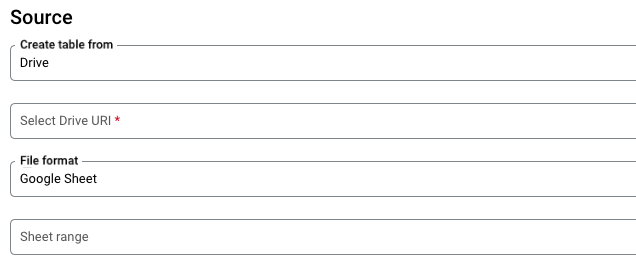
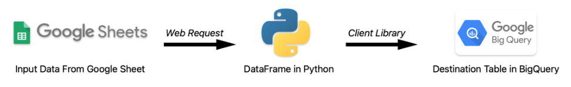

Introduction
Google Sheets, part of Google Workspace, is one of the most widely used spreadsheet tools in various industries due to its online editing, sharing, and collaboration capabilities. On the other hand, Google BigQuery, a key component of Google Cloud, serves as a robust data warehouse with powerful integrations for data pipelines, machine learning, and business intelligence tools such as Looker and Tableau.
For data engineers, a common challenge is building data pipelines that bridge the gap between non-technical business users and technical systems like data warehouses. When developing data pipelines, we often need to collaborate with non-technical users for data input. However, most of the non-tech users are not familiar with ETL tools that data engineers use. Ensuring accurate, consistent, and serializable data input is a common challenge in such business scenarios. This document explores how integrating Google Sheets with BigQuery—using Python as a middle layer—can address these challenges effectively.
Why is building a data pipeline from Google Sheets to BigQuery helpful?
User-Friendly Interface and Experience
Many non-technical users are already familiar with the functionality and interface of Google Sheets. Google Sheets often is part of their daily workflows. Using Google Sheets for data input eliminates the need for additional training or learning.
Reduce Manual Error
Automating the process eliminates the need for copying, pasting, or manually typing data, significantly reducing the risk of manual data input errors. This is especially helpful for categorical fields and numeric data fields with long digits.
Basic Data Formatting
Google Sheets’ structured format requires users to input data in rows and columns, simplifying the data transformation process.
Leveraging BigQuery and Google Cloud
Once the data is pipelined into BigQuery, data analysts and business analysts can fully utilize the powerful features and unlock potentials of BigQuery and Google Cloud. For example, data analysts can leverage the data for A/B testing, while business analysts can create dashboards to visualize and interpret the data in Looker Studio.
Existing Method and Its Limitations
BigQuery provides native support for pipelines. Users can create a table that links to an external Google Sheet by providing the URL and sheet range. You can refer to the official documentation for more details. The data syncs takes place in real time- whenever the Google Sheet is updated, the BigQuery table is automatically updated.

While this method is easy to set up, it has several limitations
- Data Integrity The table in BigQuery relies on the integrity of the Google Sheet. If issues arise with the Google Sheet
- If the sheet owner deletes the file, the corresponding BigQuery table will be destroyed.
- Changes to field names or data types in the Google Sheet can cause schema mismatches and errors, as BigQuery does not automatically update column names or data types to reflect these changes.
- If the data in Google Sheets becomes corrupted, there is no way to recover the BigQuery table, raising significant concerns about data security.
These cases can have severe consequences. If the table is corrupted, all dependent views, persistent derived tables, table joins, and dashboards linked to this table will also be affected or damaged.
Computation Speed Querying a table linked to a Google Sheet requires BigQuery’s backend to make web requests to fetch the data. This process is considerably slower than querying tables stored on disk. Performance further degrades when joining this table with others or executing correlated subqueries, as BigQuery needs to fetch the table multiple times. This can lead to extremely slow performance or even trigger server errors due to excessive requests.
Data Quality While Google Sheets offers basic data validation, data engineers are not able to implement and customize more advanced validation rules before streaming the data to BigQuery. As a result, unvalidated data can corrupt the table and impact all the data products linked to the table.
Scalability As shown in the documentation, each table in BigQuery can only link to a single Google Sheet. This limitation becomes challenging if data engineers needs to consolidate multiple Sheets into one table.
The New Method- Introducing Python as a Middle Layer
Adding Python as a middle layer can address these limitations. The Python middle layer involves three main components

- Read Data from Google Sheets and Load It as a Pandas DataFrame
- There are multiple approaches to reading data from a Google Sheet for data engineers. Below is a simple function that loads data as a Pandas DataFrame given the URL of an unlisted Google Sheet. Unlisted means that anyone with the link can view the data.
- For use cases that require higher levels of information security, data engineers can use the Google Sheets API with Google IAM Service Accounts to read data from Google Sheets with restricted access.
import pandas as pd
import re
def google_sheet_to_dataframe(sheet_url):
# Use regex to extract sheet_id and gid from the URL
match = re.search(r'/d/([a-zA-Z0-9-_]+).*gid=([0-9]+)', sheet_url)
sheet_id = match.group(1)
gid = match.group(2)
# Construct the CSV export URL
csv_url = f"https://docs.google.com/spreadsheets/d/{sheet_id}/export?format=csv&gid={gid}"
# Read the CSV data into a Pandas DataFrame
df = pd.read_csv(csv_url)
return df- Perform Data Quality Checks
- Data engineers can create functions in Python to validate the data, such as checking for duplicate rows, missing values, or invalid data formats. Compare to Google Sheets, Python has more advanced tools for data quality check, such as regex for email validation and statistical checks for outliers. If any issues are detected, the middleware can communicate the errors back to stakeholders promptly through integrated communication channels such as Slack or WhatsApp APIs, or by making a POST web request to a server that logs errors. The middle layer ensures that only clean and reliable data is pipelined to the database.
- Stream Data to BigQuery
- Python integrates seamlessly with BigQuery using libraries such as
pandas_gbqor the BigQuery Python Client Library. Data enginerrs can streamed the data in a DataFrame or in JSON format. The destination table is stored as a physical table on disk in BigQuery.
- Python integrates seamlessly with BigQuery using libraries such as
Advantages of the New System
Data Integrity The middle layer enables customized data update rules tailored to specific use cases. For instance, data engineers can choose to truncate the existing table and replace it with the latest data or append new data as snapshots with timestamps and preserve historical versions.
Query Performance Tables storing data from Google Sheets are treated as regular tables stored on disk, eliminating the performance bottlenecks from the previous method. Additionally, database managers can enhance performance by adding indexes or creating persistent derived tables as needed.
Data Quality Data engineers can implement tailored validation rules to ensure data quality, such as detecting duplicates, missing values, or inconsistencies. Identified issues can be communicated back to the Google Sheet manager for correction, ensuring only clean and accurate data enters the database.
Scalability The pipeline is able to support many-to-many mappings between source Google Sheets and destination tables in BigQuery, making it adaptable for complex use cases and growing data requirements.
Deployment
Since the script is written in Python, it can be deployed in various environments based on the use case
Regularly Scheduled Tasks The script can be set up as a scheduled task to run at specified intervals, ensuring regular updates and maintenance of the data pipeline.
On-Demand Basis The script can be deployed as an HTTP Cloud Function, enabling stakeholders to trigger it via a web request when needed. This approach provides flexibility for ad-hoc updates or event-driven use cases.
Limitations
Data Sync
The data synchronization in this approach relies on the execution of the Python function, which means that updates to the data are not reflected in real-time. It may not be suitable for use cases that require immediate, real-time data availability.
Data Volume
The volume of data is capped by Google Sheets. Google Sheets is inherently designed for lightweight data handling and not unsuitable for processing large-scale datasets.
Factors to Consider When Adopting this Pipeline Method
It is important to for the data engineers to evaluate the following factors based on the specific business case
Data Volume and Update Frequency Assess the volume of data to be processed and the required update frequency. The volume of data determines whether Google Sheets is suitable as a data input tool. Update frequency helps decide the deployment approach- scheduled tasks for periodic updates or on-demand triggers for ad-hoc updates.
Monitoring and Error Handling Data engineers need to consider when an error occurs, how the middle layer can communicate the error to stakeholders?
Deployment Platform Select the most appropriate environment for deployment, whether it’s a local server, virtual machine, or cloud-based solution like HTTP Cloud Functions or scheduled tasks.
System Update Since the code is written in Python, data engineers need to consider who will maintain and update the code and how frequently changes are expected.
Conclusion
Integrating Google Sheets with BigQuery using Python as a middle layer offers a flexible and scalable solution for building robust data pipelines. This approach addresses common challenges such as data integrity, performance bottlenecks, and data quality issues, while leveraging tools familiar to non-technical users. By implementing proper validation, monitoring, and deployment strategies, organizations can ensure that their data pipelines are efficient, reliable, and tailored to their specific business needs.